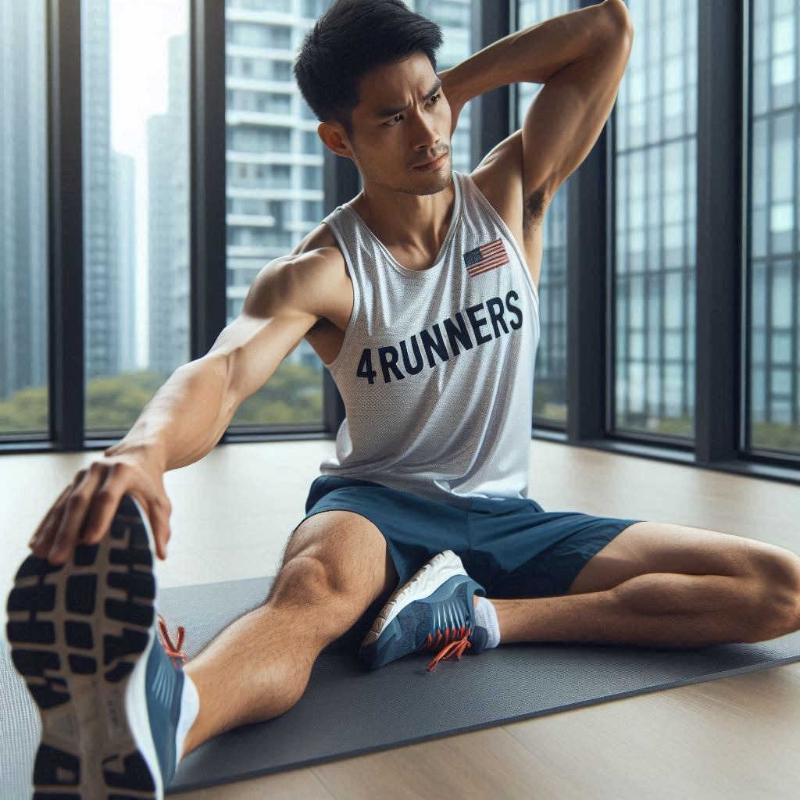
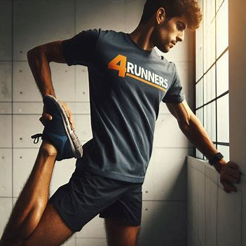
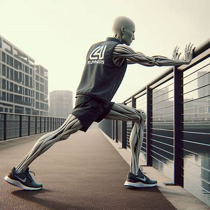

Hey runners! 🏃♂️🏃♀️
Stretching is crucial for keeping your muscles flexible and reducing the risk of injury. Here are some essential stretches to include in your routine:
Sit on the ground with one leg extended and the other bent. Reach towards your toes to feel the stretch.
Check out this Hamstring Stretch: 10-Minute Guided Stretching Routine for Runners to get started.
Stand on one leg, pull the other foot towards your buttocks. Keep your knees close together.
Follow along with this Quadriceps Stretch: 10 MIN Post-Run Stretching Routine.
Stand facing a wall, place one foot behind the other, and push against the wall to stretch your calf.
Try this Calf Stretch: 8 Min Post-Run Stretching video for a complete routine.
Fueling your body right is just as important as your training. Here are some tips to keep you energized and healthy: